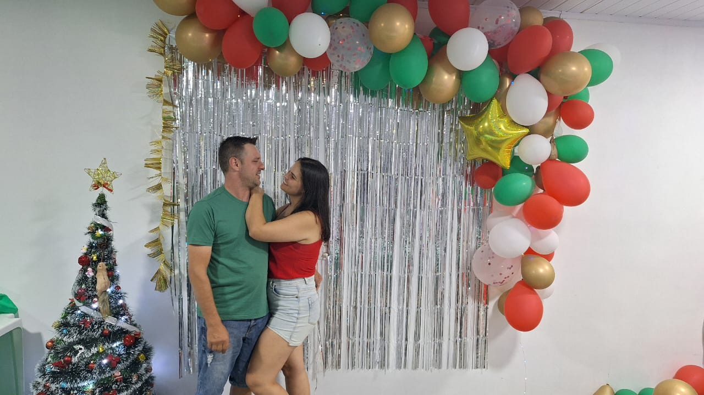
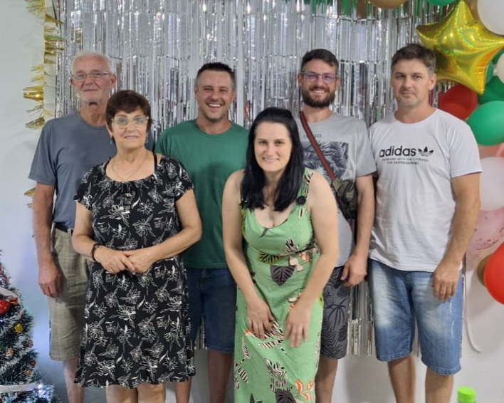

Natal 2023
Família Urbano & Família Anghinoni
Família Toda
.jpg)
Que neste Natal, eu possa lembrar dos que vivem em guerra, e fazer por eles uma prece de paz. Que eu possa lembrar dos que odeiam, e fazer por eles uma prece de amor. Que eu possa perdoar a todos que me magoaram, e fazer por eles uma prece de perdão. Que eu lembre dos desesperados, e faça por eles uma prece de esperança. Que eu esqueça as tristezas do ano que termina, e faça uma prece de alegria. Que eu possa acreditar que o mundo ainda pode ser melhor, e faça por ele uma prece de fé. Obrigada Senhor Por ter alimento, quando tantos passam o ano com fome. Por ter saúde, quando tantos sofrem neste momento. Por ter um lar, quando tantos dormem nas ruas. Por ser feliz, quando tantos choram na solidão. Por ter amor, quantos tantos vivem no ódio. Pela minha paz, quando tantos vivem o horror da guerra.
Luciane e Karol
Que esta época desperte em você os melhores sentimentos e eles venham para ficar no seu coração.
Que receba muito amor, carinho e atenção, e esses sejam seus melhores presentes deste ano.
Família Anghinoni
O Natal conta a história da família mais importante do mundo, a família que serve de exemplo de amor e união para toda humanidade. Por isso, o Natal é tempo de família, é tempo de compartilhar os nossos momentos com aquelas pessoas que são responsáveis pela nossa vida e pela nossa existência.
Um Pouco Das Fotos
No Natal não há maior presente do que a presença daqueles que amamos e que são caros para nós. Não há nada mais importante do que estar entre os nossos familiares.
Amo Vocês
Natal é tempo de perdoar, de amar e de receber a bênção de Deus, o nosso grande Pai. É tempo de se deixar guiar pelas luzes divinas e ser conduzido para o caminho do bem, da paz e da felicidade. Deixe o espírito do Natal entrar em sua vida. O Natal é amor, o Natal é família!
Amar é acreditar no outro, dividir sonhos, receber, entregar, perdoar, compreender e aceitar. Amar é querer estar junto e se separados, unidos pelo pensamento, pelos objetivos, pelos mesmos desejos. Que neste Natal possamos desfrutar juntos da alegria e das festas! Que o próximo ano seja para nós uma constante troca de ternura e realização de nossos sonhos e desejos. Amo Você! Feliz Natal e um Feliz Ano Novo, meu amor!